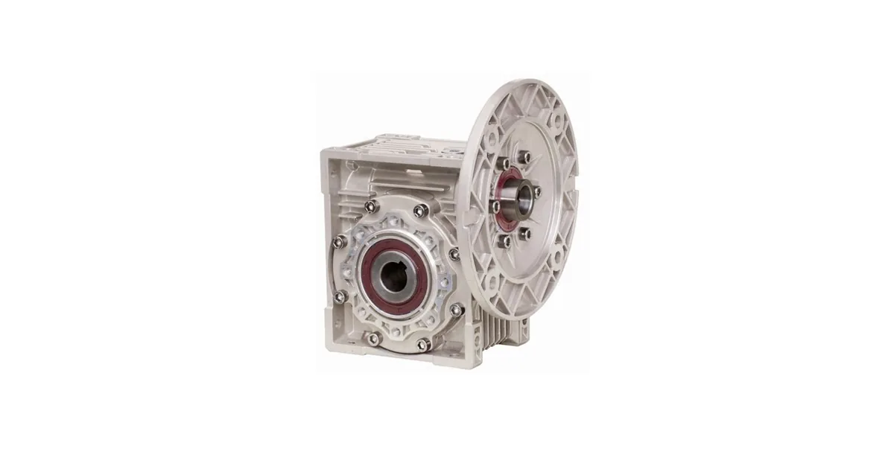

Собственное производствоПромышленные редукторы для производителей оборудования•Отгрузка по всей России•Аналоги SEW, NORD, Bonfiglioli без переделки рамы•Расчёт и КП за 15 минут•Гарантия 36 месяцевПромышленные редукторы для производителей оборудования•Отгрузка по всей России•Аналоги SEW, NORD, Bonfiglioli без переделки рамы•Расчёт и КП за 15 минут•Гарантия 36 месяцев
Опыт инженеров Завода Редукторов · время чтения ~7 минут
Немецкий Flender стоит на ключевых узлах — конвейерах, мельницах, экструдерах, — и его отказ останавливает производство. Ждать оригинал месяцами дорого. Российский аналог по габаритным и присоединительным размерам ставится на штатное место без переделки. Разберём, какие параметры снять с привода, как подобрать эквивалент и на какие сроки, цену и гарантию рассчитывать.
Почему замена Flender возможна без переделки
Индустриальные редукторы строятся по унифицированным присоединительным решениям: ряды межосевых расстояний, посадочные диаметры и длины валов, монтаж лап и фланцев, IEC-габариты двигателей. Российская серия ZR спроектирована так, чтобы повторять габаритные и присоединительные размеры массовых типоразмеров Flender. Поэтому аналог встаёт на ту же раму, стыкуется с той же муфтой и двигателем — переделка рамы, валов и обвязки не нужна.
Мы (Завод Редукторов, ООО «НИИ АТТ», Челябинск) делаем российские аналоги по габаритным и присоединительным размерам, а не «примерно похожие» узлы. Новый редуктор должен встать на место старого без доработок.
Какие параметры снять с редуктора Flender
Для точного подбора нужны данные с шильдика и несколько замеров:
тип передачи — цилиндрический (H), коническо-цилиндрический (B), червячный;
крутящий момент M2 (Н·м / кН·м) и обороты выходного вала n2;
передаточное число i и число ступеней;
мощность и габарит двигателя (IEC), число полюсов;
монтаж — горизонталь/вертикаль, лапы или фланец;
тип и размеры вала — сплошной, полый под шпонку или усадочный диск;
опции — обратный стопор, система охлаждения.
Если шильдик стёрся, тип определяют по расположению валов, а присоединительные размеры замеряют напрямую — этого достаточно для габаритного подбора.

Типовое исполнение червячного привода
Серии редукторов Flender: обозначения и типоразмеры
Прежде чем искать замену, прочитайте обозначение на шильдике: буква серии задаёт тип передачи, цифры — типоразмер. Ниже — серии Flender, с которыми чаще всего приходится работать.
Серия
Тип передачи
Типоразмеры
Момент / примечание
H1
Цилиндрический, 1 ступень
03–13
момент 3 300–75 700 Н·м, i 1,25…5,6
H2
Цилиндрический, 2 ступени
03–14
момент 3 500–107 000 Н·м, i 6,3…28
H3
Цилиндрический, 3 ступени
05–14
момент 11 600–109 000 Н·м, i 22,4…112
H4
Цилиндрический, 4 ступени
07–14
момент 21 700–113 000 Н·м, i 100…450
B2
Коническо-цилиндрический, 2 ступени
04–14
момент 6 200–101 000 Н·м, i 5…22,4
B3
Коническо-цилиндрический, 3 ступени
03–14
момент 3 600–113 000 Н·м, i 12,5…90
B4
Коническо-цилиндрический, 4 ступени
05–14
момент 11 600–113 000 Н·м, i 80…400
T
Коническо-цилиндрический в разъёмном корпусе
4–12
—
Как читается обозначение. Обозначение: тип · число ступеней · вид выходного вала · монтаж · типоразмер. Пример B3SH11 — коническо-цилиндрический, 3 ступени, сплошной вал, горизонтальный монтаж, типоразмер 11.
Буква вида выходного вала в обозначении: S — сплошной вал, V — сплошной усиленный вал, H — полый вал со шпонкой, D — полый вал под стяжную втулку, K — полый шлицевой вал по DIN 5480, F — фланцевый вал.
Таблицу нельзя читать как соответствие «модель Flender → типоразмер ZR»: прямого пересчёта обозначений не существует. Замену подбирают по шильдику или чертежу — по моменту на выходе, передаточному числу, монтажному положению и присоединительным размерам. Позиции марки собраны в разделе Flender, расчёт замены — через онлайн-подбор.
Как подобрать аналог: порядок действий
Подбор идёт от рабочих чисел, а не от кода серии:
по типу передачи выбирают конструктив аналога;
по M2, n2 и i определяют типоразмер с нужным сервис-фактором;
по монтажу, валу и опциям подбирают исполнение;
сверяют габарит по чертежу перед заказом.
Всю эту работу делает калькулятор подбора: вводите параметры с шильдика — получаете эквивалент. Готовые сопоставления собраны в разделе аналогов Flender, а общая логика замены импорта — на странице импортозамещения.
Сроки, цена и гарантия
Главное преимущество аналога перед ожиданием оригинала — сроки. Массовые типоразмеры отгружаются со склада или изготавливаются в короткий срок, тогда как поставка импорта по параллельным каналам занимает месяцы. По цене отечественный аналог, как правило, выгоднее оригинала при сопоставимых характеристиках. На каждое изделие идёт паспорт и гарантия 36 месяцев.
Критерий
Аналог ZR
Оригинал Flender
Срок поставки
склад / короткий
обычно месяцы
Присоединительные размеры
совпадают
—
Гарантия
36 месяцев, паспорт
зависит от канала
Шильдик привода — источник точных данных для подбора
Когда замена выгоднее ремонта
Если диагностика Flender показала выкрашивание зубьев, разрушение вала-шестерни, износ подшипников или трещину корпуса, ремонт с заказом импортных запчастей часто сопоставим по стоимости и срокам с новым аналогом — но без гарантии на восстановленный узел. Тогда замена на новый российский редуктор быстрее и надёжнее. Полный ассортимент — в каталоге.
Вопросы и ответы
Частые вопросы
Встанет ли российский аналог на место редуктора Flender без переделки?
Да, если он подобран по габаритным и присоединительным размерам. Серия ZR повторяет посадочные диаметры валов, монтаж лап и фланцев, ряды межосевых расстояний и IEC-габариты массовых типоразмеров Flender. Аналог стыкуется с той же рамой, муфтой и двигателем без доработки оборудования.
Какие данные нужны, чтобы подобрать замену Flender?
Тип передачи, крутящий момент M2 (или номинальный в кН·м), обороты n2, передаточное i, число ступеней, мощность и габарит двигателя по IEC, монтаж, тип вала и опции (обратный стопор, охлаждение). Всё это есть на шильдике; недостающее замеряют.
Что делать, если шильдик Flender стёрся?
Тип передачи определяют по расположению валов и корпусу, присоединительные размеры (диаметры и длины валов, монтаж лап или фланца, межосевое расстояние) замеряют напрямую. Габаритного подбора по типу и замерам достаточно, чтобы аналог встал на штатное место.
Сколько стоит российский аналог редуктора Flender?
Как правило, отечественный аналог выгоднее оригинала при сопоставимых характеристиках, а точная цена зависит от типоразмера, момента и исполнения (особенно у крупных индустриальных серий с охлаждением). Ориентировочную стоимость и сроки дадут после подбора вместе с коммерческим предложением.
Что быстрее — отремонтировать Flender или поставить аналог?
При выкрашивании зубьев, разрушении вала-шестерни, износе подшипников или трещине корпуса ремонт с импортными запчастями часто сопоставим по стоимости и срокам с новым аналогом, но без гарантии на восстановленный узел. Замена на новый российский редуктор с гарантией 36 месяцев обычно быстрее и надёжнее.
Как оформить заказ?
Заявка через сайт, письмо на zr@zavod-red.ru или звонок менеджеру. Для юрлиц — счёт по реквизитам, для частных лиц — оплата картой.
Заменить редуктор Flender можно российским аналогом серии ZR, который повторяет габаритные и присоединительные размеры массовых типоразмеров и встаёт на штатное место без переделки. Для подбора нужны тип передачи, момент M2, передаточное i, монтаж и опции. Срок — со склада или короткий, гарантия 36 месяцев.
Подробнее: характеристики и полезные ссылки
Замена Flender на российский аналог возможна благодаря унифицированным присоединительным решениям: ряды межосевых расстояний, посадки валов, IEC-фланцы. Серия ZR повторяет эти размеры, поэтому аналог не требует доработки рамы. Подбор идёт от рабочих чисел с шильдика — типа передачи, момента M2, оборотов n2 и передаточного i.
Пришлите фото или чертёж старого редуктора — изготовим аналог с теми же присоединительными. Переходной фланец или спецвал — спроектируем под вашу геометрию.
Какие документы получите с редуктором?
Паспорт изделия с характеристиками, декларация ЕАС, сертификат ГОСТ 31592-2012. Гарантия 36 месяцев — при поломке меняем по договору.
Заменим редуктор Flender без переделки
Пришлите фото шильдика Flender — подберём российский аналог по габаритам, назовём срок, цену и оформим паспорт с гарантией 36 месяцев.
Рекомендуете наши редукторы коллегам, заказчику или своему отделу снабжения? За каждый состоявшийся заказ по вашей рекомендации выплачиваем 5% от суммы — реферальное вознаграждение переводом на карту. Прозрачный договор, работа со снабженцами и проектными отделами напрямую, отгрузка от производителя (ООО «НИИ АТТ», Челябинск).